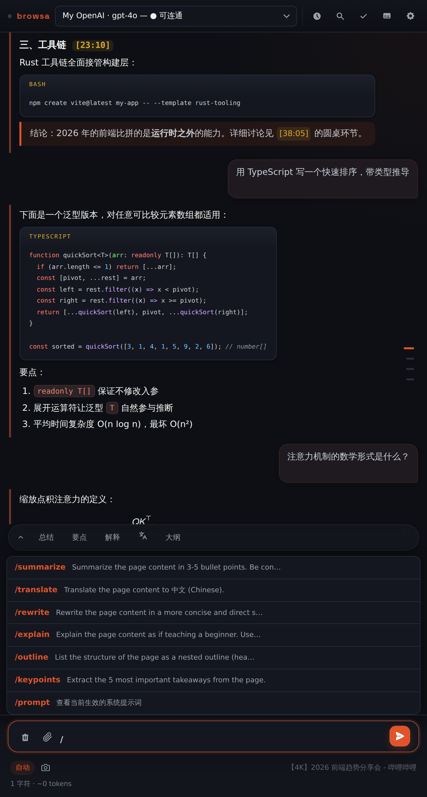

指南 / 速查表
速查表
斜杠命令与键盘快捷键的完整清单。
斜杠命令
在输入框输入 / 呼出补全。所有命令都能追加额外指令，如 /summarize 重点讲方法论：
| 命令 | 发给模型的提示 |
|---|---|
/summarize | 3–5 条要点总结 |
/translate | 翻译成中文 |
/rewrite | 更简洁的改写，保留全部事实 |
/explain | 用简单语言向新手解释 |
/outline | 仅标题的嵌套大纲 |
/keypoints | 前 5 条要点 |
/prompt | 显示当前生效的系统提示词（不发送给模型） |

快捷操作按钮
输入框上方常驻一键按钮：总结 / 要点 / 解释 / → 中文 / 大纲——等价于对应的斜杠命令。
在网页上划选文字时，浮动工具栏给出：提问 · 解释 · → 中文 · 总结——解释与 → 中文就地作答（流式卡片展开在选区旁），提问与总结送侧栏；右键菜单 browsa › 提问 / 解释 / 翻译 / 总结 四项均走侧栏。
键盘快捷键
| 快捷键 | 作用 |
|---|---|
| Ctrl+Shift+H（macOS Command+Shift+H） | 打开 / 关闭侧边栏 |
| Enter | 发送消息（可在设置里改为别的键） |
| Shift+Enter | 换行 |
| Ctrl+K | 清空历史（5 秒内可撤销） |
| Ctrl+/ | 切换上下文模式（Auto ↔ 截图） |
| Ctrl+F | 对话内搜索 |
| Esc | 停止回答 / 关闭搜索 / 关闭抽屉 |
| ↑ / ↓（输入框为空时） | 召回输入历史 |